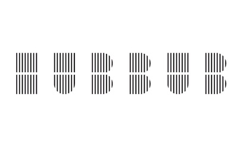
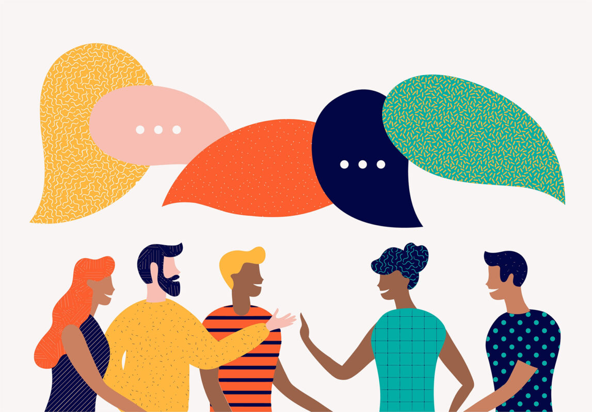
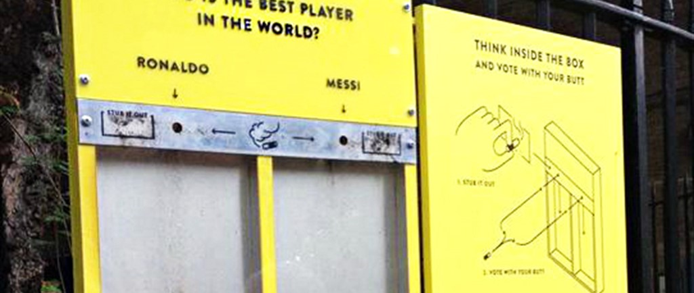

We’re an environmental charity with a difference. Our purpose is to inspire ways of living
that are good for the environment. We do this by designing campaigns that make
environmental actions desirable. We disrupt the status quo to raise awareness, nudge
behaviours and shape systems. We do this with knowledge and playfulness, and we
won’t make you feel bad.
Design By Nature, brought to you by Hubbub, is an initiative that challenges students to
find new ways to tackle environmental issues affecting our day-to-day lives. We celebrate
innovation, creativity, disruptive thinking, collaboration and insight-led ideas that make
sustainable living second nature.

We believe that to create positive environmental change at the
scale and speed needed, we need to get everyone on board.
That's why since 2014, we've been designing campaigns that
inspire ways of living that are good for the environment. We
disrupt the status quo to raise awareness, nudge behaviours
and shape systems. We do this with knowledge and playfulness,
and we won’t make you feel bad (promise!).
Awareness of climate change and sustainability in mainstream
media has risen a lot in past years. This is good, but many still
feel detached from environmental issues and are desensitised to
negative messaging and imagery. It makes changing their behaviour
challenging. We want to reach this audience by communicating
complex environmental issues in new, innovative ways. There is a
place for hard facts about climate change, but we believe there should
also be a place for optimism.

We concentrate on things people care about and are relevant
day-to-day, like the food we eat, the clothes we wear, our homes
and our neighbourhoods. We keep things simple, offering practical
and realistic solutions that help cut waste, make clothes last longer,
save money and more often than not bring people together.
Our campaigns tackle environmental issues, from food waste to
microfibres and (almost) everything in between. Curious?
We believe insight-led, experimental and collaborative design should
be at the heart of solving environmental issues. Over the years we’ve
seen how impactful great design can be in nudging behaviours. Our 100
community fridges (including two Samsung smart fridges in universities)
offer an easy solution to redistributiing surplus food and can save the
equivalent of 1.5 million meals per year from being wasted. The boats
we make from 99% recycled plastic not only tell a brilliant story of
the circular economy but more importantly, they are durable, highly
practical and look great! The ‘Ballot Bin’ cigarette voting ashtray reduces
cigarette littering by up to 46% and prevents plastics and chemicals
from entering our waterways.

Especially in a post COVID-19 world, new forms of design, technology
and different solutions are needed to address the scale of the
environmental challenge we face.
That’s where Design By Nature comes in!